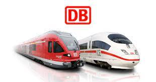
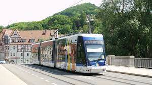
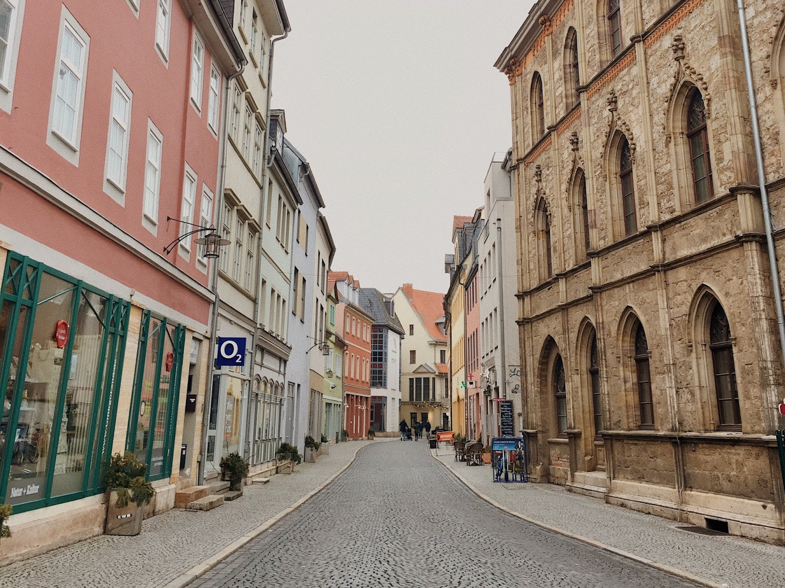
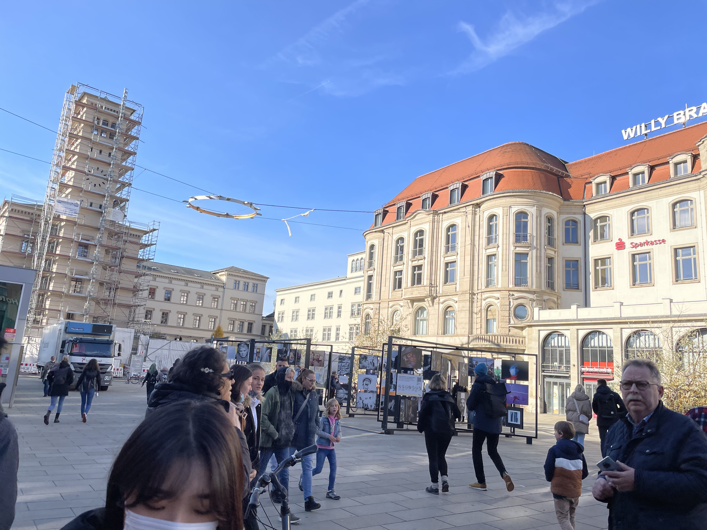
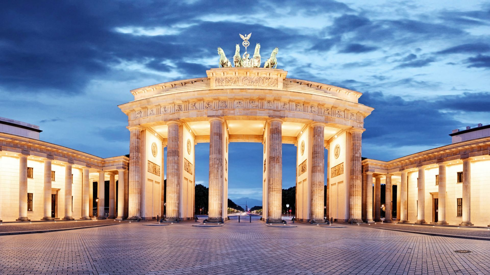
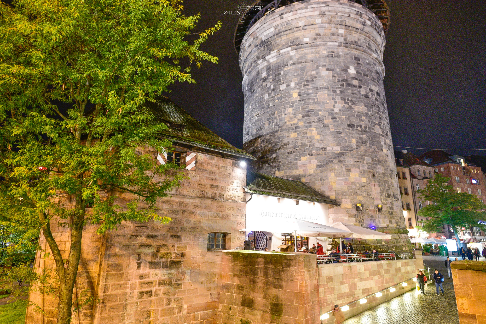
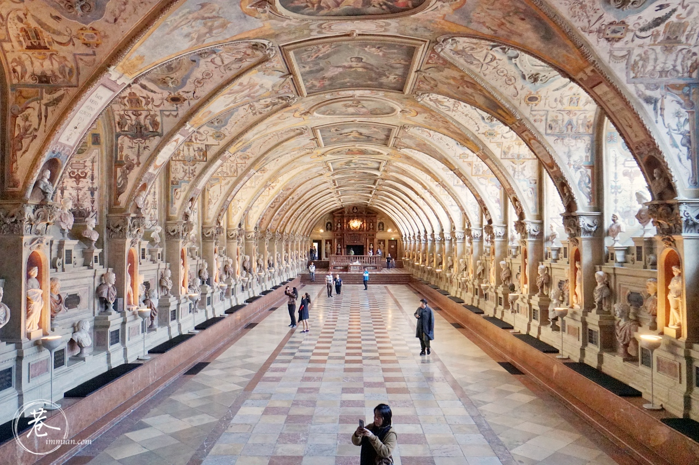

我的旅程
手忙腳亂的準備
在處理交換學校的錄取申請同時，還要辦理簽證、護照以及申請宿舍。由於交換學校是到了七月才寄通知信，在那之前我擔心會因為疫情而無法到德國交換，因此一直沒有辦理護照或預約簽證，但這裡還是誠心建議，兩者都要盡早辦理。
護照因為申請時間長，而且準備交換學校的錄取以及宿舍的申請時都需要用到，所以如果能在交換學校通知之前就辦好是最好的。
簽證的話最好也是在交換學校通知前向德國在台辦事處預約，但預約時間不要太早，因為申請簽證時需要看交換學校的錄取證明。
預約類型選擇「長期簽證」，並選「於德國請內就讀高等學院簽證」。
申請時須注意的是財力證明。一般而言，辦事處會要求交換生申請限制提領戶頭。
所謂限制提領戶頭，即是學生在台灣預先將之後交換期間的用錢「總量」匯到這個限制戶頭（我申請時最低金額是每個月841歐元，現在可能有變動，請隨時上辦事處網站注意），到了德國之後，在當地開一個自己要用的戶頭，回報給限制提領戶頭的銀行，之後限制提領戶頭銀行每個月就會撥固定金額到學生的德國戶頭。如果當初填的是841歐元，則會每個月撥841歐元到學生的德國戶頭。
我個人當初在申請時常常遇到網頁出問題，加上家裡不太想要一次把這麼龐大的金額匯出去，所以選擇了辦事處給的第二種財力證明方式——獎學金證明。
我當初有申請教育部的「學海飛颺」交換生獎學金，且也通過。而證明的部分是我請國際處幫我以中文及英文寫說我有拿到獎學金，且總量也有符合每個月841歐元的標準。
我等待簽證核發時間大約是兩個禮拜，也有聽過有一個月的。
在簽證核發前，辦事處會先通知學生簽證是否有過，並要求提出健康保險證明（非旅遊險）。
這邊要注意的是，德國在台辦事處網站上有給一個名單，上面是辦事處可以接受的保險公司，其中也包含了台灣的保險公司。但是，那僅僅是幫助學生拿到簽證的名單，而不是交換學校或德國會接受的。
德國是個地方自治權限很大的國家，所以很多規定是看邦州的。我那時候看到辦事處給的名單上有台灣的保險，因此就申請了台灣的，直到學伴跟我說，交換學校不接受，依他們邦的規定，必須得要保當地的保險才行。
經過我來來回回寫信問交換學校，學校給的答覆也是如此。因此，我不得不在抵達德國後處理這部分問題。
德國有區分公保和私保。公保一定會被接受，私保則看各學校規定。
多災多難的開始

我是10/02到德國的。
首先要注意的是鐵路火車票購買。因為大的機場只有在Frankfurt、Berlin和München，因此需要搭火車才能到達耶拿。
我上網查，德國的鐵路是由Deutsch Bahn（DB）營運的，可以下載他們的App提前訂電子票，越早訂越便宜，差非常多。座位需要另外加4歐元購買，可以視那班車的乘客量決定要不要加購；上車後可以看座位旁邊的小螢幕，會顯示該座位是否有被預訂，如果座位沒人預定，就可以直接坐。
另外，我在德國的時候，DB似乎就有發公告，表示以後不再人工售票，所以目前看來App也是火車唯一的購票方式了。
關於德鐵，有一個特點必須知道，那就是每次搭車，車班幾乎都會遲到，這是非常正常的。而如果買的票是需要轉車的，你很有可能趕不上你要轉的那班車。
我和同學到德國的第一天，從法蘭克福搭到耶拿就遇到了這種事。那時候是我看系統一直提醒著說火車會誤點、感不上要轉的車，我就緊急問了站務人員，說我錢已經付了，如果搭不上下一班車怎麼辦。結果站務人員卻擺擺手叫我們放心。原本還很疑惑，在快要到轉車站的時候，就看到系統顯示我們要轉的那班車會晚點開，因為要等要轉車的乘客。另外，我之後也有上網查，有人直接拿已經錯過的班次的票（同樣是因為前一台車誤點）搭下一班車，結果剪票人員也沒說什麼。所以雖然很容易感不上轉車這件事很頭痛，但其實如果有跟站務人員講清楚是因為前一班車誤點，基本上不太會有大礙。
到了耶拿後，要陸陸續續處理很多事。首先是生活的部分，要先跟房東見面簽約、買生活用品、入籍、辦理銀行戶頭(不管是為了接收限制提領戶頭的錢還是為了在德國轉帳用），也因為我出國前沒有處理好保險問題，所以到德國後我還得去辦保險。
入籍的話就如前述，需要在14天內辦理，網站上會寫需要攜帶的文件。
銀行戶頭是一定要辦理的，因為之後房東會每個月從這個戶頭裡面自動扣款。我是辦網路銀行N26，不過N26之前有傳出盜刷疑雲，所以建議大家還是不要放入過多錢在裡頭，或者將網路刷卡及國外刷卡的選項關掉；或者大家可以直接到實體銀行辦戶頭，只是聽說最後離開前還要再關戶頭。
保險我最後選擇辦理私保，因為只交換半年，很多公保的福利我認為我用不太到，且私保相較於公保便宜許多。值得注意的是，並不是每間私保都可以被交換學校接受，所以要弄清楚交換學校接受哪幾間私保，另外，如果選擇私保的話，也必須要跟德國任一家公保公司申請免公保證明。
我當初選擇的是Mawista保險公司，學生有三種方案，最便宜是一個月33歐元左右，最貴的是一個月76.80歐元，而公保都是一個月100多歐元起跳。
生活用品的購買基本上沒有太大困難，需要注意的是德國的超市星期天都不會開，而手機sim card也是在超市買的。
建議入籍、sim card、開戶頭跟簽約的事情優先處理，因為向學校註冊需要透過打電話完成，在宿舍的網路也必須在在跟房東簽約後才會開通，且不是以wifi的方式，而是要接網路線，而要完成簽約，則需要向房東填寫德國銀行戶頭。
在耶拿的交通主要是依靠公車或是地面電車(Tram)。我沒有買票搭過公車，只有搭Tram，所以以下說明只能到用在Tram上。

買票的地方有兩個，車上，或者站牌旁。
前者買完就沒事了，如果是在站牌旁的機器買的，上車後需要找剪票閘，票才算有效。
這邊值得注意的是付錢方式，這在每個城市都不同，有的可以刷卡，有的只能付現，且有些付現只接受特定硬幣，例如20cent、50cent、1歐願和2歐元，不接受紙鈔。
在德國生活有一件滿重要的事，那就是準備足夠的硬幣。雖說平時消費大部分可以使用電子支付或刷卡，但生活上還是很多地方需要用到硬幣，例如上述的Tram，還有就是超市。超市的推車需要用錢幣借，通常只接受50cent、1歐元和2歐元。
這次去德國是交換性質，所以平日還是會上課。但既然都來了，那自然是會抽空到別的城市觀光。以下就是我去的地方：
耶拿Jena

威瑪Weimar

來到德國後第一次跟朋友見面XDDD
威瑪的街景真的很漂亮，是個光是在那邊走路都會覺得心情好的地方，非常適合散步聊天。
雖然出發前查了很多景點，還劃分區域和確認價格跟開放時間，結果實際到了威瑪基本上都只去了不用錢的地方，像是廣場w
其實我一直都不是很在意要去觀光景點，除非真的很有興趣，不然我覺得走馬看花也是個不錯的選擇。
不過也不是真的完全不想花錢在觀光上。三點的時候想說去參觀集中營，可是算一算坐車到的時候那邊也休息了；轉念想說可以去參觀歌德故居，但是三點半到門口的時候接待員跟我們說四點就休息了，逛完整個地方需要一個小時，建議隔天早點去。所以這趟威瑪行基本上在很漂亮的城市邊聊天邊亂走而已，雖然好像沒有真的做什麼，但還是令人滿足。
被拒絕的我們最後跑到在廣場吃冰，口味叫Goethe & Schiller，就是第一張圖片的那兩個人，1.3歐元一大球像是不用錢一樣，划算划算。以為是個難得的好天氣就可以為所欲為，結果吃到最後在寒風中發抖，手指已經沒有知覺wwww
與室友的埃爾福特Erfurt mit meinen Mitbewohnerinnen

大約在兩個禮拜前，室友看到European Street Food Festival的資訊，便問我和另一個女生室友要不要參加。點餐的時候說德文真的好緊張（明明才一句而已），結果闆娘講完德文之後直接又笑著跟我用英文複述一遍。雖然想跟她說前面那一句德文我聽得懂，但想想就算了，免得她之後烙其他更高深的詞彙我聽不懂。
柏林Berlin

紐倫堡Nürnberg

我很喜歡生活化的景色與巧遇，像是朋友無意間拍到的照片，路人看了我沒在看的鏡頭，讓我覺得很有趣，沒有什麼特別的理由。另外還有第二天拍照時遇到一對熱情的老夫婦，超可愛。
來到Nürnberg終於吃到Bratwurst（香腸麵包），我一吃就愛上，冬天吃超有感覺。我記得每個地區的Bratwurst都不一樣，這邊是用小香腸。還記得出發前有跟Jena的德文老師提到Bratwurst，因為是對話，所以我那時候還以為是我聽錯發音，這個單字其實是das Brot(麵包）+die Wurst（香腸)，結果老師老師直接跟我說沒有這種東西QQ本來想點大份的，結果店員直接跟我說沒了，超受歡迎。
每次去別的城市都一定會找一間德式餐館，狠狠發洩一下我在Jena只看到Pizza、中東菜跟咖啡廳的憤恨。
這間餐館的服務生超級熱情，裝潢類似小木屋，頗有鄉村感。
這次水煮豬腳跟烤豬腳都吃到了，吃過兩次烤豬腳後，誠心建議吃水煮的，完全不會柴，也不會爛爛的很噁心。不過這間最讓我驚艷的其實是服務生誠心推薦的馬鈴薯，酸酸的很好吃。
慕尼黑München

剛下火車就感覺到了大城市的氛圍，大概就是快速的步伐、多元的種族和相較於耶拿混亂的治安和冷漠的氣氛。
也有可能只是灌進車站的風太大了。
第一天非常不按行程地把一整天都砸在集中營了。第一是因為從市中心坐車到集中營要一個小時，第二是因為疫情的關係，Google map指的入口沒有開，我們兩個女生只好花半小時走偏僻的小樹林，幸好是白天。中間其實兩度因為不知道會不會走到門口而快崩潰，而且走到一半的時候，朋友還突然跟我提到希特勒自殺的地點，我差點以為他要跟我講就是這裡，整個雞皮疙瘩差點起來。
幸好不是。
雖然找路找很久是原因之一，但真正花費我們一整天的原因是集中營真的很大。踏進門口就可以感覺到裡面的肅穆，比教堂還要更甚。裡面大多數描述的都是個案還有自白，還可以看到幾個人的紀念壇。
冬天的歐洲天黑得很早，我們是半淋雨回到旅館的。沒有撐雨傘是因為僅僅是毛毛細雨而已，但淋久了頭髮還是濕的滿徹底的。
晚餐隨便找了一間旅館附近的地中海餐廳吃。店門口暗暗的，很像那種電影裡面會出現的破爛小酒吧，店門口還會有個正在抽菸的老闆。老闆好像沒有很會講英文，人感覺挺隨和的，點完菜上完菜之後還有來問過一次「一切都好嗎」（Alles gut?），不過我們吃完好久後他都沒有要來結帳的意思，大概是在前面跟客人聊太開心所以忘記後面還有兩個亞洲人了哈哈。
後來休息一會兒後，22:00左右又出發前往布蘭登堡門。原本是想要隔天跟菩提樹下大街一起逛的，但聽說夜景很美，反正我們有買第一天的City mobil交通票，8歐城市內交通坐到爽，就直接去咯。這是我到德國後第一次天黑後出門。
我覺得可能是因為耶拿沒地鐵，所以在柏林每次坐地鐵就覺得特別冰冷。到布蘭登堡門的時候就⋯⋯挺亂的。第一次看到德國這麼晚還這麼多人的。聖誕樹前有一個街頭藝人扮成聖誕老人在表演樂器，一堆喝醉酒的德國人在附近大吼大叫、溜滑板車、放音樂。那些說德國人死板嚴肅的，你們只是沒看過人家喝酒而已。我跟郁文就在旁邊嘲笑那群跑去找聖誕老人拍（騷）照（擾）的人。人生第一杯熱紅酒就在這裡品嚐到了，大概是咳嗽糖漿的味道，甜到膩，還有一點藥味。最後我們看到警察來了之後就走了，大概是在抓那群未成年喝酒的還亂動東西的。
第二天上午先去柏林圍牆紀念公園，順便去了隔壁的教堂墓園。走到一半才想起來，前一天用德文訂餐廳位子的時候好像講錯時間了，想要訂13:30，結果講成12:30，真的關鍵時刻掉鏈子。總之重新訂了一次之後就過去了。
餐廳叫Mutter Hoppe，賣德國菜。想說都來德國這麼一趟了總得吃一次德國菜，不要一直關在家裡煮菜，廚藝也沒有多進步。
我們點了一碗牛肉湯、一盤德國豬腳和一盤肉丸拼盤（忘記名字了，只記得肉丸很好吃）。豬腳皮烤得非常硬也非常脆，肉原本吃的時候覺得滿嫩的，但到裡面的部分就變得很柴了，難怪底下要鋪醬汁。配菜是佔了醬汁的馬鈴薯塊和酸菜。
店內的風格走鄉村風，看起來就是一般親朋好友聚會的場所，挺溫暖的。服務生也非常熱情（除了櫃檯那位），也會一直過來問一切都好嗎，看到我們盯著吧台的啤酒機一直看還很主動的說要給我們Menu 哈哈，最後就點了有檸檬味的啤酒喝喝看。嗯，大概是我跟啤酒最合的一次。總之，小費給的心甘情願。
第二天最意外的收穫大概是聖誕市集。因為圖林根邦還有很多城市的聖誕市集都取消了，原本以為沒機會碰到。主要都是賣吃的，有咖哩香腸、可麗餅、熱紅酒還有巧克力等等，我們兩個人為了找可以躲雨的地方吃東西真的晃了很久，最後雖然找到了但還是吃得很狼狽。市集中間有一個溜冰場，超多父母帶著蘿莉和正太在溜冰的。聖誕市集真的是最能感受得到聖誕節氛圍的地方。
大概從快傍晚想要一路走菩提樹下大街回去中央車站，雖然已經沒有菩提樹了。路上其實還有很多景點，像是教堂、博物館之類的，但其實沒什麼空去，加上風雨越來越大，連帶著體感溫度都降低了，最後妥協早早回車站窩在麥當勞裡面取暖。
是說，我來德國後第一次吃麥當勞就是在柏林，真的有夠勤儉持家。
.png)